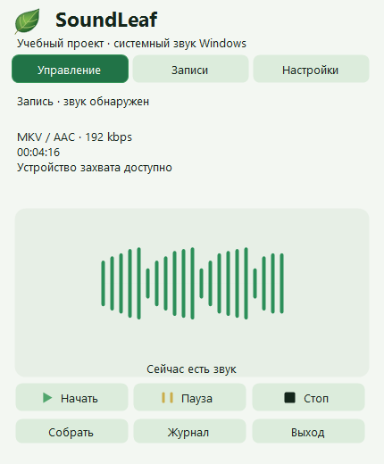
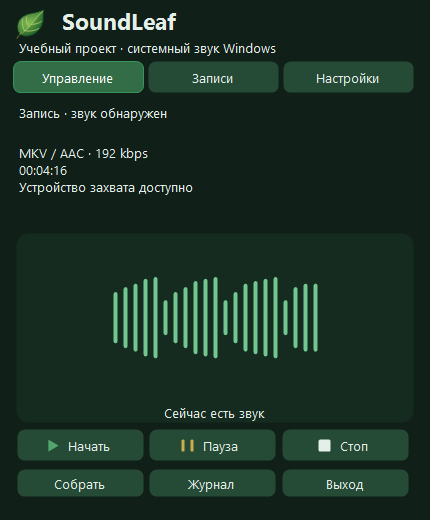
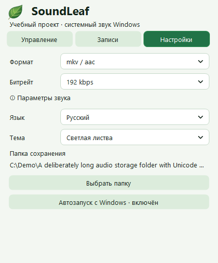
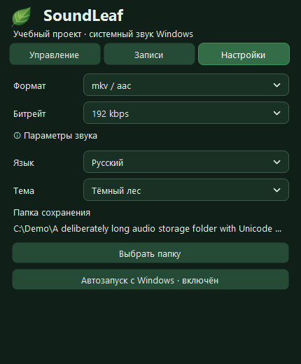
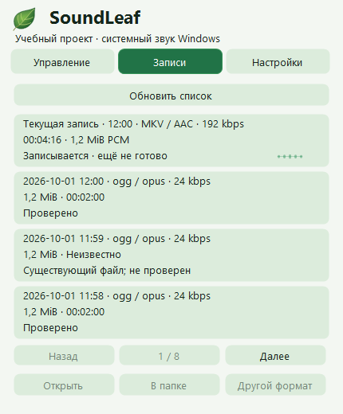
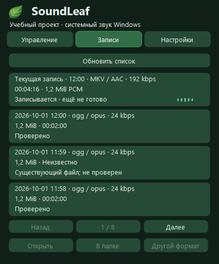

SoundLeaf
Руководство
От первого запуска до сохранённой записи. Все шаги — рядом с настоящим интерфейсом SoundLeaf.
Начать с первого шага

1 · Установка
Windows 11 x64 · .NET Framework 4.8. Скачайте автономный Setup или portable ZIP со страницы выпуска. Setup устанавливает программу для текущего пользователя без администратора; FFmpeg 9.0.2, соответствующие исходники и лицензии вложены. Интернет при установке не нужен. Установщик не запускает приложение и не включает автозапуск. Portable ZIP распакуйте целиком в доступную для записи папку. Сверьте SHA256SUMS.txt. Версия не подписана: Windows может предупредить о неизвестном издателе; не отключайте защиту.
2 · Запись
При запуске SoundLeaf запись начинается автоматически после проверки папки, свободного места и выбранного профиля. Источник — устройство вывода Windows по умолчанию, не микрофон. Записывайте только разрешённые материалы с необходимым согласием. Левый щелчок открывает панель, правый — меню. Время паузы исключается из результата. Escape или щелчок снаружи скрывает только панель.
Форматы и настройки
Основной профиль: mkv / aac, 192 кбит/с с исходными частотой и каналами. При остановленной записи выбирается один формат: ogg / opus (изначально 24 кбит/с, моно, 48 кГц, речевой VBR), mp3 (CBR), m4a / aac или aac / adts. VBR — целевой битрейт, не гарантия размера. Дополнительные AAC/MP3 используют 48 кГц и до двух каналов. В настройках выбираются папка, тема и Deutsch / Русский / English. Старые файлы не перемещаются.


3 · Сохранение и проверка
Нажмите стоп и дождитесь кодирования, полного декодирования и проверки длительности. Вращающийся круг в трее означает обработку, а не готовность. Итог готов только после проверки и атомарной публикации без перезаписи. Резервный WAV удаляется только после успеха; при ошибках аудио сохраняется. Список показывает готовые записи и текущую незавершённую сессию. Пересохранение в другой формат создаёт проверенную копию, оставляет исходник и не улучшает утраченное качество.


Восстановление и только WAV
Если кодировщик не работает, автоматического переключения нет. Режим «только WAV» выбирается явно в трее. Длинная запись остаётся частями до 256 МиБ, не одним WAV неограниченного размера. Завершённые WAV-сессии отмечаются отдельно. Восстановление использует проверенные WAV-части и сохранённый профиль; исходники архивируются только после успеха.
4 · Ограничения
Сугубо учебный проект, не профессиональное средство записи. Проверен на одном компьютере Windows; матрицы экранов/DPI включают моделирование, а не проверку всех мониторов и чистой системы. Ниже 256 МиБ свободного места запись запрещена, при малом или неизвестном месте есть предупреждение. Это не гарантия места на всю запись. Порог тишины влияет только на индикатор, не на звук в файле. После смены устройства начните новую сессию. Перед обновлением остановите запись, дождитесь сохранения, выйдите и сделайте копию Recordings и State. Удаление оставляет пользовательские данные; автоматическое обновление и перенос не реализованы.
5 · Помощь
При ошибке откройте журнал через трей. Перед отправкой проверьте аудио, журналы и личные пути.
Сообщить о проблемеПравовая информация
SoundLeaf записывает всё, что Windows воспроизводит через устройство вывода по умолчанию. Сюда относятся и голоса других людей в телефонных разговорах, видеоконференциях и онлайн-встречах (например, Microsoft Teams или Zoom). Микрофон не записывается.
Согласие всех участников: записывайте разговоры только если все участники заранее были проинформированы и согласились. Назовите цель, объём и место хранения. При отказе или отзыве согласия остановите запись и по запросу удалите файл.
§ 201 StGB (Уголовный кодекс Германии): в Германии неправомерная запись непубличной речи может быть преступлением, как и передача такой записи другим лицам. Учебная цель этого не меняет.
GDPR (DSGVO): голос — персональные данные. За пределами чисто личных или семейных целей действует GDPR: правовое основание, информирование людей, целевое использование и удаление. SoundLeaf хранит записи локально и ничего не отправляет; место хранения и передача записей остаются на вашей ответственности.
Соблюдайте также авторские права и условия сервисов, звук которых вы записываете. Проект не заменяет юридическую консультацию и не гарантирует соблюдения закона.